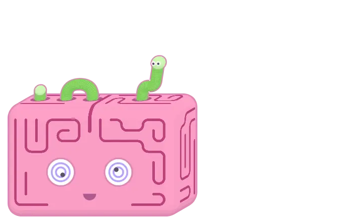
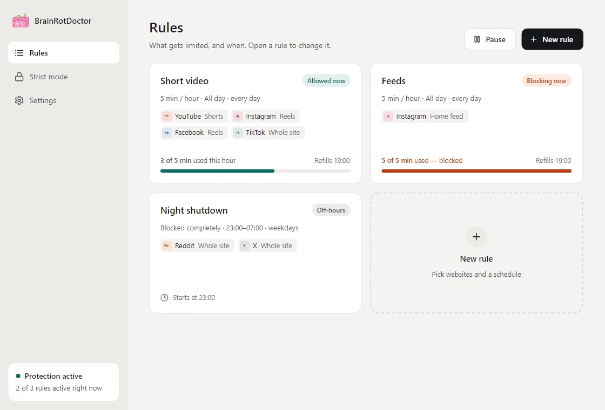
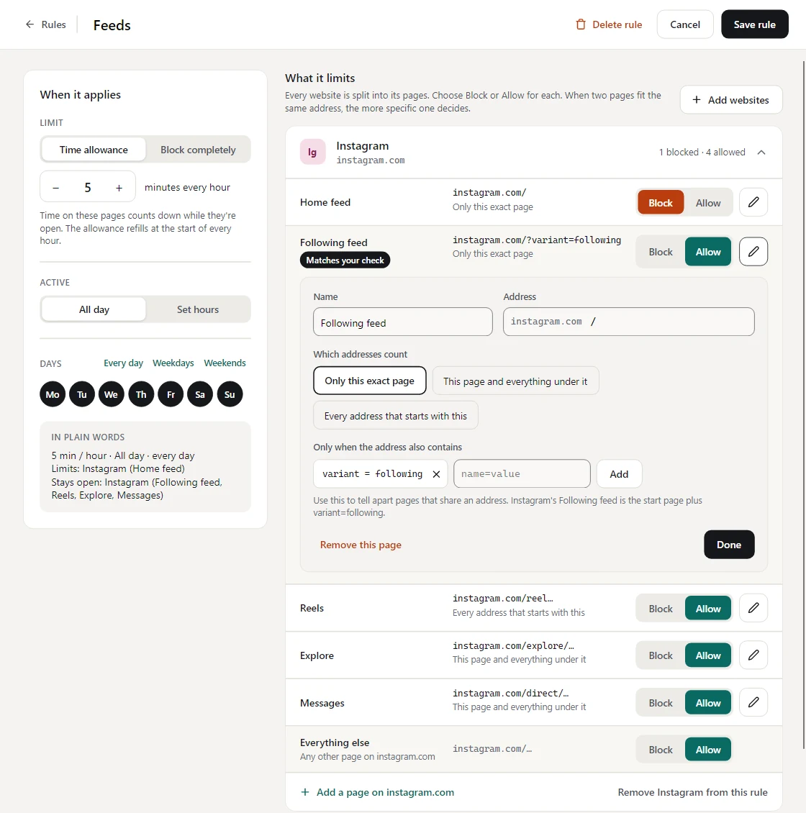
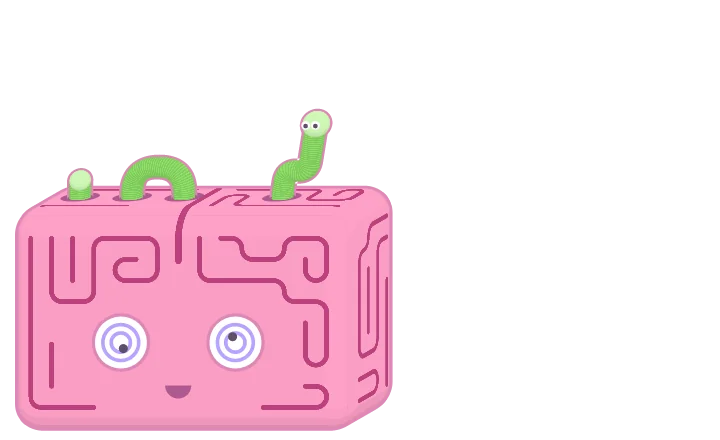
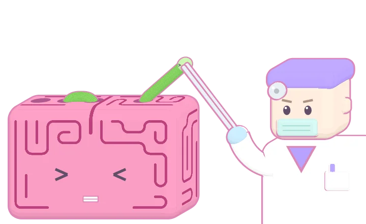
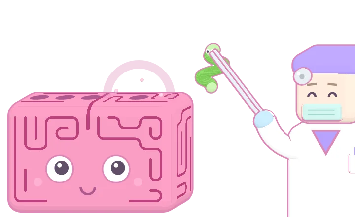
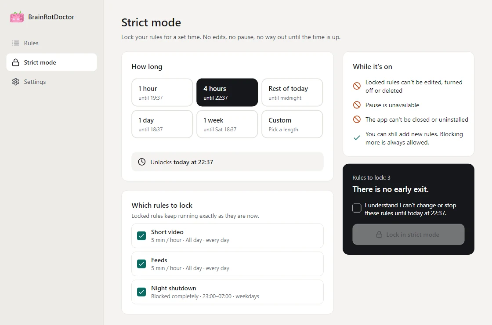

Pick websites, keep the good parts
Choose Instagram, YouTube, TikTok, Facebook, X, Reddit and more, or type any address. Each site comes split into pages, so you can block Reels and the feed while Messages stay open.
Reels, Shorts, the endless feed: they're built so you never leave. BrainRotDoctor gives them a time budget. When it runs out, a little doctor pulls the worm out of your brain and the tab closes.
One .exe · installs for your user only · updates itself

You opened it to check one message. Forty minutes later the feed is still going and you can't name a single thing you saw. That's the loop. Browser extensions switch off in three clicks, so they don't hold. BrainRotDoctor runs outside the browser and is built to be annoying to get around.
You make rules. A rule is what to limit and when.
Choose Instagram, YouTube, TikTok, Facebook, X, Reddit and more, or type any address. Each site comes split into pages, so you can block Reels and the feed while Messages stay open.
"5 minutes per hour, then block." Enough for a quick look, not enough to lose the afternoon. The allowance refills every hour. Or block the pages completely.
Make a rule apply all day or only between set hours, say 23:00 to 07:00 on weekdays, so nights stay nights.

Every website is split into its pages, and each page is set to Block or Allow. The common pages come ready, and you can add your own. Not sure what a link will do? Paste it into Check an address and the rule tells you.

A blocked tab doesn't just vanish. A short scene plays in the corner of your screen, and the tab closes the moment the worm pops out.

The infested brain rises in the corner of your screen. Switch to another page now and nothing closes.

He grabs the worm with his forceps and pulls.

The worm is out and the tab closes. Only that tab, never the whole browser, and the window you're working in keeps the focus.
Pick how long, from an hour to a week, and which rules to lock. Then:
There is no early exit. Outside strict mode you can pause blocking any time: for 15 minutes, an hour or the rest of the day.

Get BrainRotDoctor.exe and double-click it.
Windows warns about an unknown publisher because the app isn't signed. Click More info → Run anyway.
Click Install. It sets itself up for your user, starts with Windows and begins protecting you.
No administrator rights needed. Running a newer download over an installed copy simply upgrades it, and installed copies update themselves in the background. To remove it, use Windows Settings → Apps (not while strict mode is on).